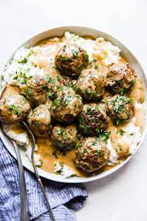

Swedish Meatballs

Description
The Best Swedish Meatballs are smothered in the most amazing rich and creamy gravy. The meatballs are packed with
such delicious flavor. Savory, comforting and smothered with a sauce that melts in your mouth. You will quickly
agree these are the BEST you have ever had!
Ingredients
- 1 pound ground beef
- 1/4 cup panko bread crumbs
- 1 tablespoon parsley chopped
- 1/4 teaspoon ground allspice
- 1/4 teaspoon ground nutmeg
- ¼ cup onion finely chopped
- ⅛ teaspoon Pepper
- ½ teaspoon salt
- 1 large egg
- 1 tbsp. olive oil
- 5 tbsp. butter
- 3 tbsp. flour/li>
- 2 cups beef broth
- 1 cup heavy cream
- 1 Tablespoon Worcestershire sauce
- 1 tsp. Dijon mustard
- salt and pepper to taste
Steps
- Mix: In medium sized bowl combine ground beef, panko, parsley, all spicee, nutmeg, onion,
garlic powder, salt and pepper and egg. Mix till combined.
- Roll: Roll into 12 large meatballs or 20 small meatballs. In a large skillet heat olive oil
and 1 tablespoon butter.
- Brown: Add the meatballs and cook turning continuously until brown on each side and cooked
through. Transfer to a plate and cover with foil
- Sauce: In the same skillet add 4 Tablespoons butter and flour and whisk till it turns
brown. Slowly stir in beef broth and heavy cream. Add the worcestershire sauce and mustard and bring to a
simmer till it starts to thicken.
- Simmer: Add the meatballs back to the skillet and simmer for another 1-2 minutes. Add salt
and pepper to taste.
- Transfer steaks to a platter and pour gravy over top.